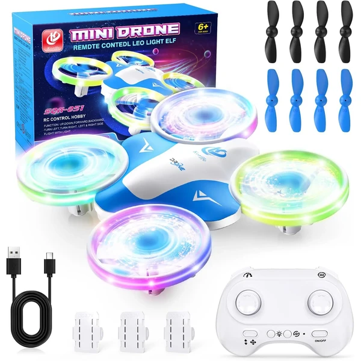
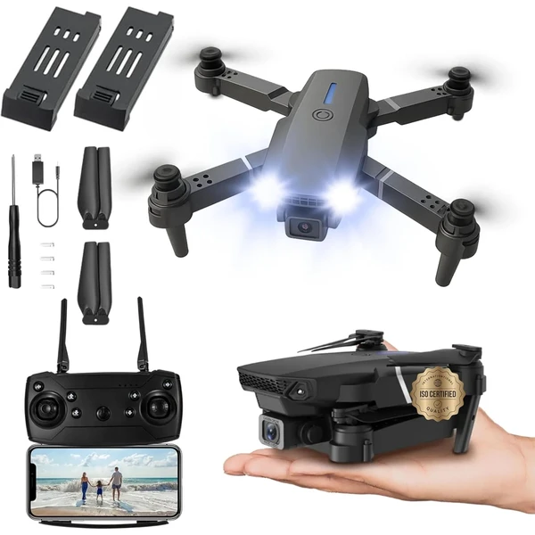

A los 9 años los drones más avanzados permiten grabar vídeo o realizar maniobras más técnicas, como vuelos estabilizados a distintas alturas. El niño ya entiende mejor los factores que afectan al vuelo, como el viento o la batería, y planifica mejor sus sesiones de pilotaje. En esta selección encontrarás drones pensados para esta edad.
¿Qué desarrollan los drones a los 9 años?
Entender qué factores afectan al vuelo, como el viento o la batería, añade una capa de pensamiento técnico al juego.
- Coordinación mano-ojo
- Orientación espacial
- Pensamiento técnico
- Concentración
- Planificación
- Reflejos

Mini Drone con Cámara 1080P
Un dron cuadricóptero equipado con cámara HD 1080P para fotos y videos aéreos. Incluye luces LED brillantes, modo sin cabeza y 3 baterías que permiten hasta 18-22 minutos de vuelo continuo.
⭐ ¿Por qué nos gusta?
- ✔ Cámara HD 1080P con transmisión a móvil.
- ✔ Tres baterías para vuelo prolongado.
- ✔ Fácil de comenzar para principiantes.
💬 Lo que más destacan las familias
Muchos padres coinciden en que la cámara permite a los niños capturar vistas aéreas de verdad. La inclusión de tres baterías es también un punto muy valorado, permitiendo sesiones de vuelo más largas sin esperar recargas.
Ver en Amazon

Loolinn Dron con Cámara Ajustable
Un mini dron especialmente diseñado para niños con cámara ajustable que permite capturar fotos y videos desde diferentes ángulos. Incluye protectores de hélice para máxima seguridad y dos baterías.
⭐ ¿Por qué nos gusta?
- ✔ Cámara manual ajustable en múltiples ángulos.
- ✔ Protectores de hélice incluidos para seguridad.
- ✔ Muy fácil de volar para principiantes.
💬 Lo que más destacan las familias
Entre los comentarios más habituales aparece lo sencillo que resulta manejar la cámara ajustable incluso para niños sin experiencia. Los protectores de hélice también se mencionan como esencial para evitar sustos.
Ver en Amazon

Loolinn Dron Anti-Colisión
Un mini dron equipado con tecnología de evitación automática de obstáculos mediante sensores infrarrojos. Permite volar sin control remoto usando solo las manos. Incluye acrobacias de 360° y dos baterías.
⭐ ¿Por qué nos gusta?
- ✔ Sensores evitan choques automáticamente.
- ✔ Control por gestos con las manos.
- ✔ Hasta 14 minutos de tiempo total de vuelo.
💬 Lo que más destacan las familias
Una de las cosas más comentadas es que los sensores realmente funcionan: los drones evitan choques incluso en espacios cerrados. El control por gestos fascina a los niños como una experiencia casi mágica.
Ver en Amazon

Drone i9 con Luces LED
Un dron equipado con LEDs de neón de múltiples colores que cambian durante el vuelo. Cuenta con función de retención de altitud automática y acrobacias de 360°. Incluye protectores de hélice y dos baterías recargables.
⭐ ¿Por qué nos gusta?
- ✔ Luces LED que cambian de color en el aire.
- ✔ Retención automática de altitud para control fácil.
- ✔ Tres modos de velocidad ajustables.
💬 Lo que más destacan las familias
Lo que más suele gustar es el espectáculo de luces, especialmente cuando vuela de noche. La retención automática de altitud facilita mucho el control, permitiendo que niños sin experiencia mantengan el dron estable.
Ver en Amazon

Korffe Mini Dron
Un mini dron con 6 tipos de luces LED de colores ajustables que realiza giros de 360° y vuelos en anillo. Incluye 3 baterías para 30 minutos totales de vuelo y 8 alas de recambio de dos colores.
⭐ ¿Por qué nos gusta?
- ✔ Luces LED de 6 colores ajustables.
- ✔ Tres baterías para sesión larga de 30 minutos.
- ✔ Ocho alas de recambio incluidas.
💬 Lo que más destacan las familias
Un detalle que aparece una y otra vez es lo hermoso del espectáculo de luces, especialmente en espacios oscuros. El hecho de incluir alas de recambio es valorado porque permite seguir jugando sin interrupciones si alguna se daña.
Ver en Amazon

Drone Potencia para Principiantes
Un dron diseñado para principiantes con funciones básicas pero efectivas: vuelo estable, modo sin cabeza y acrobacias simples. Batería de larga duración e interfaz intuitiva para que cualquier niño pueda empezar a volar rápidamente.
⭐ ¿Por qué nos gusta?
- ✔ Ideal para primeros vuelos sin experiencia.
- ✔ Interfaz intuitiva y botones simples.
- ✔ Batería de larga duración incluida.
💬 Lo que más destacan las familias
Lo que más suele gustar es que sea tan fácil de aprender: los niños vuelan en minutos. Se recomienda para quienes buscan algo simple antes de pasar a drones más complejos con características avanzadas.
Ver en Amazon